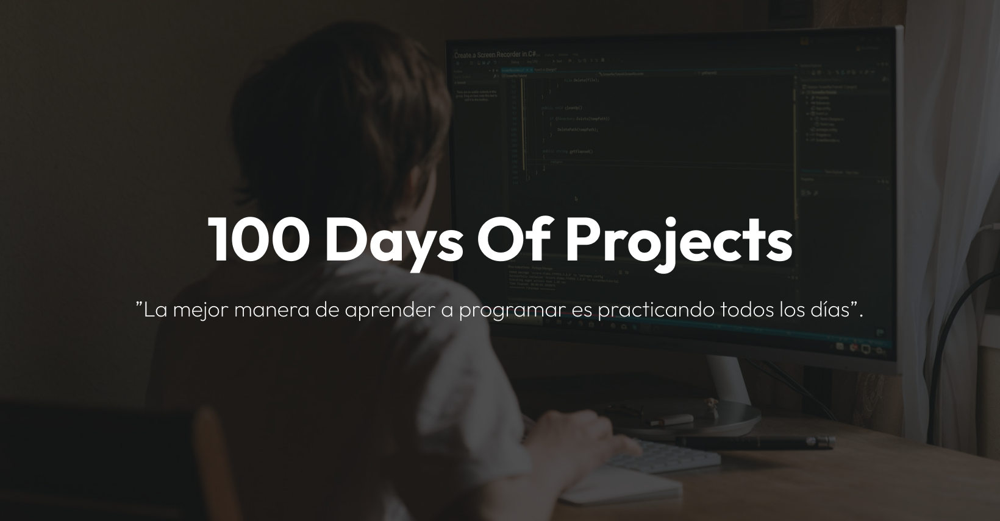

Felicitaciones por aceptar el desafío de codificación 100daysofprojects. Hoy has tomado la decisión de mejorar tus habilidades de codifación frontend (HTML, CSS, JS & Git) construyendo proyectos reales durante los próximos 100 días.
Al completar los 100 proyectos, recibirás el Kit #100daysofprojects en cualquier parte del mundo.
Recomendaciones
Eres libre de utilizar cualquier herramienta/tecnología y flujo de trabajo con el que te sientas más cómodo. A continuación, te sugerimos algunos consejos:
- Crea un repositorio en GitHub con el nombre del proyecto (ejemplo: 01-profile-card).
- Clona el repositorio en tu pc local
- Analiza los diseños antes de codificar
- Despliega tu proyecto en un hosting gratuito como GitHub Pages, Netlify o Vercel
- Comparte tu proyecto con la comunidad
Comunidad
Únete a cientos de miembros que ya están mejorando sus habilidades de codificación y hablando sobre el desafío 100daysofprojects.
Nosotros
Frontend Club te ayuda a mejorar tus habilidades de codificación en HTML, CSS y JavaScript, mediante la construcción de proyectos reales todos los días.
Un cafecito☕ para seguir creando nuevos desafíos de codificación (#10realprojects). Mira quién está detrás de Frontend Club.

La mejor manera de aprender a programar es practicando todos los días.